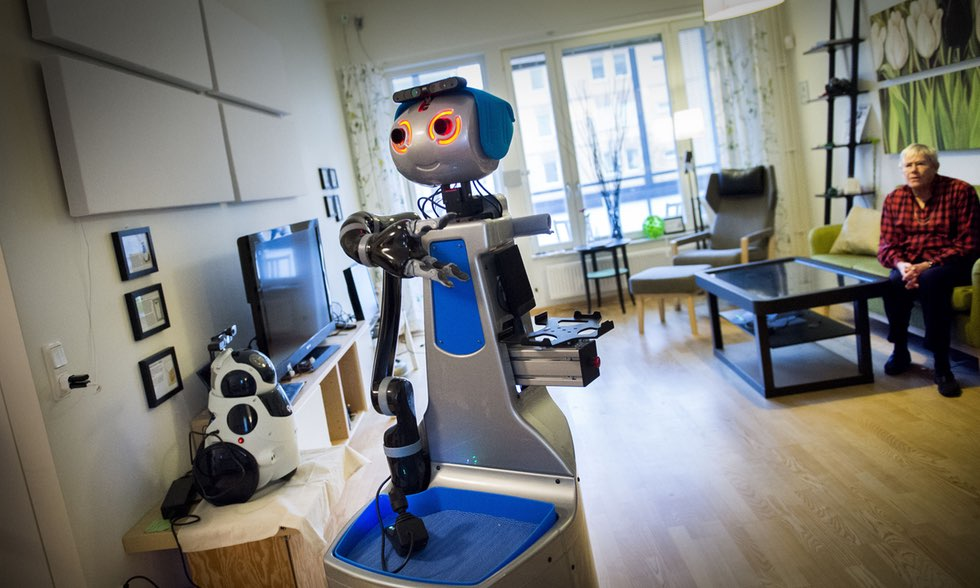

Ökad robotisering och automatisering är förändringar som skapar både jobb och välstånd tack vare den ökade produktivitet det medför. De alarmistiska stämningarna kring robotisering är också överdriven. Automatisering leder till att både nya behov och nya yrken uppstår och kan också behövas för att råda bot inom områden med stor brist på arbetskraft. Det skriver kulturgeografen Jonathan Borggren.
Automatisering, digitalisering och robotisering är begrepp som duggar tätt i dagens kunskapssamhälle. Ofta då i kombination med ödesmättade konstateranden om deras negativa inverkan på jobb och sysselsättning. Men samtidigt innebär automatisering högst nödvändiga produktivitetsvins-ter för svenska företag och möjligheter att med andra verktyg bekämpa arbetskraftsbrist inom skola och omsorg.

I mitt arbete med rapporten Strukturomvandling och Automatisering (Region Skåne 2016) är en av slutsatserna att den alarmistiska stämning som präglat den senaste tidens diskussion om digitaliseringens effekter på framtida jobb i bland annat Skåne är överdriven.
Det finns tid att förbereda några av våra största yrkeskategorier inom till exempel vård och omsorg. Frågan är bara hur.
Exemplen på att robotarna kommer är många:
En bank i Nederländerna meddelade nyligen att den kommer att låta 5 800 anställda gå för att ge plats åt en ”digital finansplattform”.
Ett datorprogram ställer idag vissa cancerdiagnoser med större precision än de mest erfarna onkologer.
Så kallade ”co-bots” som arbetar tillsammans med anställda och där omprogrammering av robotens rörelser reducerats till en enkel knapptryckning blir allt billigare.
Logistikbranschen kommer allt närmare en bred introduktion av autonoma transporter.
Automatiseringen av våra arbetsuppgifter är alltså över oss på bred front. Hög- eller lågutbildad spelar ingen roll – ingen går längre säker.
För att förbereda några av våra kärnyrken (till exempel lärare, ekonomer, vårdpersonal eller detaljhandelspersonal) på den teknikutveckling som sker behöver vi tidigt införa den kunskap som kommer att krävas.
Vi kan inte längre nöja oss med att ingenjörer och IT-personal tillgodogör sig den senaste tekniken i syfte att uppdatera sin kompetens – kärnyrkena måste också ges möjlighet att ta del av den senaste tekniken oavsett om det handlar om robotar, mjukvara, molnet-tjänster eller digitala hjälpmedel.
För några yrken kommer det att innebära ett förnyat (och kanske välbehövligt) fokus på kärnuppgifterna. För andra yrken blir de automatiseringsbara arbetsuppgifterna så många att vi talar om en mer fullständig förändring av yrkets innehåll och identitet.
Det som skett är att automatiseringens effekter når yrken som tidigare ansågs fredade, vilket spätt på den alarmistiska stämningen. Till exempel kan även vissa högutbildade specialister sannolikt snart ersättas av digitala lösningar.
2015 skrev ekonomen Mårten Blix på DN Debatt att ”allt fler jobb automatiseras och de arbetstagare som är långsamma med att hoppa på det digitala tåget kommer i allt högre grad bli marginaliserade”.
Det stämmer till viss del. Automatisering tar bort vissa jobb. Men samtidigt är det lätt att blunda för de jobbskapande processer som sker. Låt oss till exempel ta de som utvecklar appar till mobiltelefoner. Om vi backar tjugo år i tiden och letar efter någon som förutspår att 10 000 personer i Sverige idag ska ”jobba med appar” får vi nog leta länge.
Istället bör den pågående automatiseringen i Skåne betraktas som jobbpåverkande snarare än jobbförstörande och är på så vis en spegling av den pågående strukturomvandling som sker och som de facto skett i olika vågor de senaste tvåhundra åren.
Jobb förstörs och jobb skapas men viktigast är hur dagens jobb förhåller sig till den teknikutveckling som sker. Här har vårt hög-re utbildningssystem och arbetsmarknadens parter stora utmaningar framför sig för att se till att acceptans för teknik inte blir en generationsfråga. Budskapet är solklart till Region Skåne och till berörda utbildningsanordnare som skall förse vården med personal:
Välkomna automatiseringen samtidigt som befintliga yrken synkas med den nya tekniken.
Jonathan Borggren
SKRIBENTEN
Jonathan Borggren är filosofie doktor i kulturgeografi och medförfattare till rapporten ”Strukturomvandling och automatiseringens konsekvenser”.